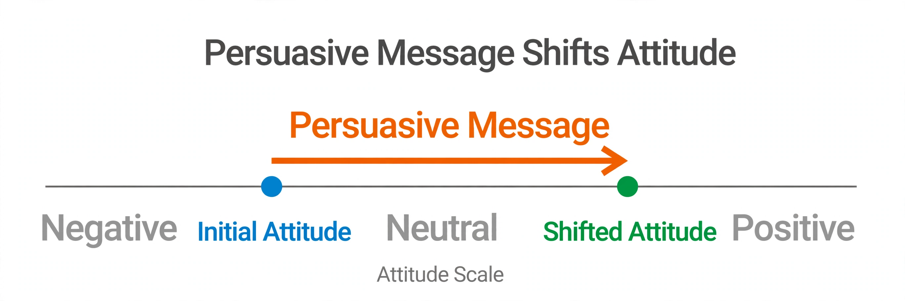

Attitude change
| Attitude change | |
|---|---|
| Field | Social psychology |
| Related concepts | Persuasion, cognitive dissonance, elaboration likelihood model |

Attitude change is the modification of an individual's evaluative disposition toward an object, person, group or idea. It is a central topic in social psychology, studied under the broader heading of persuasion, and matters for advertising, politics, health behaviour and education.
Approaches
Persuasive communication
Research descending from Carl Hovland's Yale programme examined how source credibility, message content and audience characteristics affect persuasion. Dual-process models such as the elaboration likelihood model (Petty and Cacioppo) distinguish a central route — careful evaluation of arguments, producing durable change — from a peripheral route driven by cues such as attractiveness or repetition, producing weaker, temporary change.
Cognitive dissonance
Leon Festinger's theory of cognitive dissonance holds that inconsistency between attitudes and behaviour produces discomfort that people resolve by changing their attitudes; classic experiments on insufficient justification showed that small incentives can produce greater internalised change than large ones.
Other mechanisms
Attitudes also shift through direct experience, evaluative conditioning, mere exposure, social norms and reference groups, and self-perception processes described by Daryl Bem. Resistance to change is strengthened by commitment, reactance, and prior inoculation against counter-arguments (McGuire).
See also: Persuasion · Cognitive dissonance · Attitude (psychology)